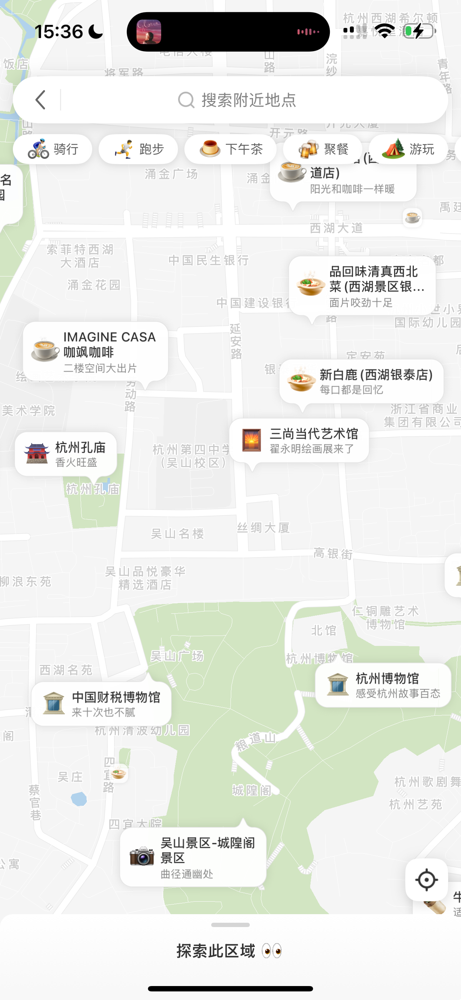

我是陈一达，耶鲁大学流行病学与卫生统计在读硕士，专注于 AI 产品方向。
我具备从数据分析到 AI workflow 设计的完整能力链，曾在小红书负责大模型增强 POI 推荐理由与召回策略，在美团 Keeta 参与海外履约产品建设。我相信好的产品决策来自对用户真实需求的深刻理解，以及对数据的严谨分析。
在本地生活地图场景，负责大模型增强 POI 推荐理由与推荐召回策略优化，涵盖 AI workflow 设计、评测迭代、策略优化。
负责骑手端基础能力建设，支持 4-5 个国家新市场扩张与冷启动阶段千人规模运力补充，降低新市场上线与复制成本。
用户在出行前决策时需要了解目的地信息，但地图中 POI 展示仅为"XXX篇笔记"的数量形式，缺乏内容表达，点击吸引力弱。

目前在寻找 AI 产品方向的实习 / 全职机会，欢迎交流！